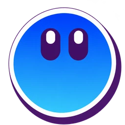
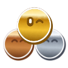
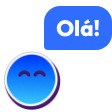
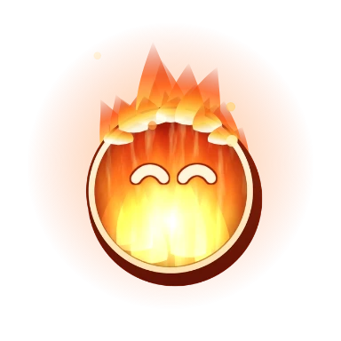
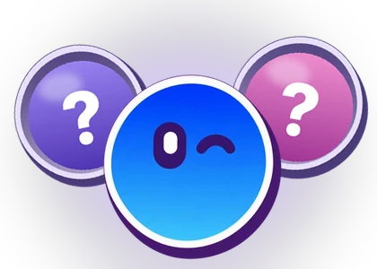
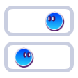
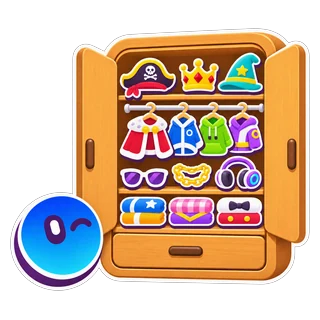
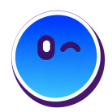

Rush
60 seconds on the clock. Every level you clear adds 10 seconds, every hit takes 3 away. How far can you get?

Ball is a one-tap physics puzzle. Pull back, let go, and bank shots off the walls to land Ball in the goal in as few launches as you can.

36 skins, plus secrets
10 languages Stars to chase
You’ll get it in ten seconds. Mastering 999 levels takes a little longer.
Unlock 36 skins just by playing. Every one has its own trail, launch burst and little extras floating around Ball.
A burst of glitchy pixels, a streak of chalk dust, a shower of disco sparkles. Pick a skin and every launch, bounce and goal looks different.

Psst… there’s more.Not every skin shows up in the wardrobe. Some stay hidden until you find them, so keep playing and keep your eyes open.
When the levels need a break, race the clock or play two boxes at once.
60 seconds on the clock. Every level you clear adds 10 seconds, every hit takes 3 away. How far can you get?

Two boxes, one shot. Aim in the bottom box and the top ball copies you, flipped left to right. Get both home.
Every player’s levels are built from their own random seed, so nobody plays the same boxes you do. Replay any level from the Levels calendar to chase the stars you missed, and watch the difficulty climb from Easy to Super Hard.
From your first bounce to your best Rush run, everything gets counted.
Stuck? Aim snaps to good shots and a ghost ball can show you one that works.
English, Deutsch, Français, Italiano, 日本語, 한국어, Português, Русский, Español and Türkçe.

Wardrobe WarriorAn achievement for the ones who collect every single skin.

Light and darkPick the look you like, with sound effects and vibration on phones.
Ball’s house hides a couple of skins. Poke around.
News about the game lands in your Inbox. Gifts from the Ball team, and rewards from promo codes, wait for you in Gifts. Got an idea? Settings → Send feedback goes straight to us.
Download Ball from the App Store. It plays offline, and your progress saves on your device automatically.
Download Ball on the App Store, for iPhone and Mac.